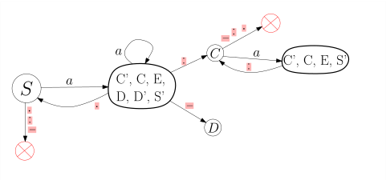

5.4 Von einer regulären Grammatik zu einem endlichen Automaten an einem Beispiel./wly/05/04-regular-grammar-to-fsm.wly:2:11
Theorem 5.4.1./wly/05/04-regular-grammar-to-fsm.wly:4:5 ./wly/05/04-regular-grammar-to-fsm.wly:4:5 Zu jeder kontextfreien Grammatik./wly/05/04-regular-grammar-to-fsm.wly:5:9 ./wly/05/04-regular-grammar-to-fsm.wly:6:9$G = (\Sigma, N, S, P)$./wly/05/04-regular-grammar-to-fsm.wly:6:9 gibt es einen Kellerautomaten./wly/05/04-regular-grammar-to-fsm.wly:6:32 ./wly/05/04-regular-grammar-to-fsm.wly:7:9$M = (\Sigma, Q, \Gamma, \qstart, \delta)$./wly/05/04-regular-grammar-to-fsm.wly:7:9,./wly/05/04-regular-grammar-to-fsm.wly:7:51 der die./wly/05/04-regular-grammar-to-fsm.wly:7:51 gleiche Sprache akzeptiert, also ./wly/05/04-regular-grammar-to-fsm.wly:8:9$L(G) = L(M)$./wly/05/04-regular-grammar-to-fsm.wly:8:42../wly/05/04-regular-grammar-to-fsm.wly:8:55
In diesem Unterkapitel wollen wir das Gelernte an./wly/05/04-regular-grammar-to-fsm.wly:10:5 einem konkreten Beispiel anwenden. Wir beginnen (1)./wly/05/04-regular-grammar-to-fsm.wly:11:5 mit einer Beschreibung eines Formats in natürlicher./wly/05/04-regular-grammar-to-fsm.wly:12:5 Sprache; (2) basteln uns daraus mit Hilfe des./wly/05/04-regular-grammar-to-fsm.wly:13:5 "Baukastenprinzips" eine reguläre Sprache; (3) säubern./wly/05/04-regular-grammar-to-fsm.wly:14:5 diese, indem wir Regeln der Form ./wly/05/04-regular-grammar-to-fsm.wly:15:5$X \rightarrow Y$./wly/05/04-regular-grammar-to-fsm.wly:15:38 ./wly/05/04-regular-grammar-to-fsm.wly:15:55 und ./wly/05/04-regular-grammar-to-fsm.wly:16:5$X \rightarrow a$./wly/05/04-regular-grammar-to-fsm.wly:16:9 eliminieren; (4) bauen einen./wly/05/04-regular-grammar-to-fsm.wly:16:26 nichtdeterministischen endlichen Automaten; (5)./wly/05/04-regular-grammar-to-fsm.wly:17:5 transformieren diesen in einen deterministischen./wly/05/04-regular-grammar-to-fsm.wly:18:5 endlichen Automaten../wly/05/04-regular-grammar-to-fsm.wly:19:5
1. Beschreibung des Formats in natürlicher Sprache./wly/05/04-regular-grammar-to-fsm.wly:22:9
Unsere Sprache
./wly/05/04-regular-grammar-to-fsm.wly:24:5$L$./wly/05/04-regular-grammar-to-fsm.wly:24:20
soll so ähnlich sein wie die der./wly/05/04-regular-grammar-to-fsm.wly:24:23
erlaubten Domainnamen, allerdings mit ein paar./wly/05/04-regular-grammar-to-fsm.wly:25:5
Abänderungen, um die obigen Transformationen./wly/05/04-regular-grammar-to-fsm.wly:26:5
spannender zu machen. Ein Wort in unserer Sprache./wly/05/04-regular-grammar-to-fsm.wly:27:5
besteht aus einer nichtleeren Folge von
./wly/05/04-regular-grammar-to-fsm.wly:28:5Labels./wly/05/04-regular-grammar-to-fsm.wly:28:46
die./wly/05/04-regular-grammar-to-fsm.wly:28:53
jeweils durch einen
./wly/05/04-regular-grammar-to-fsm.wly:29:5../wly/05/04-regular-grammar-to-fsm.wly:29:26
separiert sind. Jedes Label./wly/05/04-regular-grammar-to-fsm.wly:29:28
ist eine nichtleere Folge von Blöcken (ein nichtleerer./wly/05/04-regular-grammar-to-fsm.wly:30:5
String aus Buchstaben und Zahlen), separiert durch
./wly/05/04-regular-grammar-to-fsm.wly:31:5:./wly/05/04-regular-grammar-to-fsm.wly:31:57
./wly/05/04-regular-grammar-to-fsm.wly:31:59
oder
./wly/05/04-regular-grammar-to-fsm.wly:32:5-./wly/05/04-regular-grammar-to-fsm.wly:32:11
aber niemals durch beides innerhalb eines./wly/05/04-regular-grammar-to-fsm.wly:32:13
Blockes. Also:./wly/05/04-regular-grammar-to-fsm.wly:33:5
bla:bla:blue.xyz-12-zx.b:x:yyy:xxx:aaa./wly/05/04-regular-grammar-to-fsm.wly:37:10
ist ein Wort in ./wly/05/04-regular-grammar-to-fsm.wly:39:5$L$./wly/05/04-regular-grammar-to-fsm.wly:39:21,./wly/05/04-regular-grammar-to-fsm.wly:39:24 aber./wly/05/04-regular-grammar-to-fsm.wly:39:24
a:b-c.hello./wly/05/04-regular-grammar-to-fsm.wly:43:10
ist kein Wort in
./wly/05/04-regular-grammar-to-fsm.wly:45:5$L$./wly/05/04-regular-grammar-to-fsm.wly:45:22,./wly/05/04-regular-grammar-to-fsm.wly:45:25
da das erste Label die./wly/05/04-regular-grammar-to-fsm.wly:45:25
Separatoren
./wly/05/04-regular-grammar-to-fsm.wly:46:5:./wly/05/04-regular-grammar-to-fsm.wly:46:18
und
./wly/05/04-regular-grammar-to-fsm.wly:46:20-./wly/05/04-regular-grammar-to-fsm.wly:46:26
mischt. Habe ich
./wly/05/04-regular-grammar-to-fsm.wly:46:28$L$./wly/05/04-regular-grammar-to-fsm.wly:46:46
genau./wly/05/04-regular-grammar-to-fsm.wly:46:49
genug beschrieben? Stellen wir eine Meta-Frage: Was./wly/05/04-regular-grammar-to-fsm.wly:47:5
zählt überhaupt als
./wly/05/04-regular-grammar-to-fsm.wly:48:5genaue Beschreibung./wly/05/04-regular-grammar-to-fsm.wly:48:26
einer./wly/05/04-regular-grammar-to-fsm.wly:48:46
Sprache? Wir können uns dem Mund fusselig reden und./wly/05/04-regular-grammar-to-fsm.wly:49:5
Beispiele und Nicht-Beispiele angeben, am Ende aber./wly/05/04-regular-grammar-to-fsm.wly:50:5
werden wir irgendwann beginnen, formale Regeln./wly/05/04-regular-grammar-to-fsm.wly:51:5
aufzustellen, die unsere Sprache beschreiben - wir./wly/05/04-regular-grammar-to-fsm.wly:52:5
werden also im Prinzip eine
./wly/05/04-regular-grammar-to-fsm.wly:53:5Grammatik./wly/05/04-regular-grammar-to-fsm.wly:53:34
schreiben. Tun./wly/05/04-regular-grammar-to-fsm.wly:53:44
wir dies also../wly/05/04-regular-grammar-to-fsm.wly:54:5
2. Eine reguläre Grammatik./wly/05/04-regular-grammar-to-fsm.wly:57:9
Beginnen wir mit dem Alphabet. Da es 62./wly/05/04-regular-grammar-to-fsm.wly:59:5
alphanumerische Zeichen gibt:
./wly/05/04-regular-grammar-to-fsm.wly:60:5a..zA..Z0..9./wly/05/04-regular-grammar-to-fsm.wly:60:36
und wir./wly/05/04-regular-grammar-to-fsm.wly:60:49
uns keine unnötige Arbeit machen wollen, beschränken./wly/05/04-regular-grammar-to-fsm.wly:61:5
wir uns auf ein Zeichen:
./wly/05/04-regular-grammar-to-fsm.wly:62:5a./wly/05/04-regular-grammar-to-fsm.wly:62:31../wly/05/04-regular-grammar-to-fsm.wly:62:33
Dazu kommen die./wly/05/04-regular-grammar-to-fsm.wly:62:33
Separatoren
./wly/05/04-regular-grammar-to-fsm.wly:63:5:-../wly/05/04-regular-grammar-to-fsm.wly:63:18../wly/05/04-regular-grammar-to-fsm.wly:63:22
Also:
./wly/05/04-regular-grammar-to-fsm.wly:63:22$\Sigma = \{a,.,:,-\}$./wly/05/04-regular-grammar-to-fsm.wly:63:30../wly/05/04-regular-grammar-to-fsm.wly:63:52
./wly/05/04-regular-grammar-to-fsm.wly:63:52
Stellen Sie sich einfach vor,
./wly/05/04-regular-grammar-to-fsm.wly:64:5$a$./wly/05/04-regular-grammar-to-fsm.wly:64:35
stehe für beliebige./wly/05/04-regular-grammar-to-fsm.wly:64:38
alphanumerische Zeichen. Sowohl Grammatik als auch./wly/05/04-regular-grammar-to-fsm.wly:65:5
Automaten lassen sich einfach anpassen. Wir beginnen./wly/05/04-regular-grammar-to-fsm.wly:66:5
ganz unten und schreiben eine Grammatik für Blöcke,./wly/05/04-regular-grammar-to-fsm.wly:67:5
also nichtleere Strings aus alphanumerischen Zeichen../wly/05/04-regular-grammar-to-fsm.wly:68:5
$$
\begin{align*}
B &\rightarrow a \ | \ aB
\end{align*}
$$./wly/05/04-regular-grammar-to-fsm.wly:70:5
Als nächstes führen wir ein nichtterminales Symbole./wly/05/04-regular-grammar-to-fsm.wly:74:5
./wly/05/04-regular-grammar-to-fsm.wly:75:5$C$./wly/05/04-regular-grammar-to-fsm.wly:75:5
für Labels mit
./wly/05/04-regular-grammar-to-fsm.wly:75:8:./wly/05/04-regular-grammar-to-fsm.wly:75:25
ein und ein Nichtterminal
./wly/05/04-regular-grammar-to-fsm.wly:75:27$D$./wly/05/04-regular-grammar-to-fsm.wly:75:54
./wly/05/04-regular-grammar-to-fsm.wly:75:57
für Labels mit
./wly/05/04-regular-grammar-to-fsm.wly:76:5-./wly/05/04-regular-grammar-to-fsm.wly:76:21../wly/05/04-regular-grammar-to-fsm.wly:76:23
Wir wählen die Buchstaben
./wly/05/04-regular-grammar-to-fsm.wly:76:23$C,D$./wly/05/04-regular-grammar-to-fsm.wly:76:51,./wly/05/04-regular-grammar-to-fsm.wly:76:56
./wly/05/04-regular-grammar-to-fsm.wly:76:56
weil
./wly/05/04-regular-grammar-to-fsm.wly:77:5:./wly/05/04-regular-grammar-to-fsm.wly:77:11
auf Englisch
./wly/05/04-regular-grammar-to-fsm.wly:77:13colon./wly/05/04-regular-grammar-to-fsm.wly:77:28
und
./wly/05/04-regular-grammar-to-fsm.wly:77:34-./wly/05/04-regular-grammar-to-fsm.wly:77:40
./wly/05/04-regular-grammar-to-fsm.wly:77:42dash./wly/05/04-regular-grammar-to-fsm.wly:77:44
heißt../wly/05/04-regular-grammar-to-fsm.wly:77:49
./wly/05/04-regular-grammar-to-fsm.wly:78:5$C$./wly/05/04-regular-grammar-to-fsm.wly:78:5-Labels./wly/05/04-regular-grammar-to-fsm.wly:78:8
können wir uns nach dem Baukastenprizip./wly/05/04-regular-grammar-to-fsm.wly:78:8
bauen, in dem wir
./wly/05/04-regular-grammar-to-fsm.wly:79:5Theorem 5.1.14
anwenden. Wir./wly/05/04-regular-grammar-to-fsm.wly:79:5
fügen zur "End-Produktion"
./wly/05/04-regular-grammar-to-fsm.wly:80:5$B \rightarrow a$./wly/05/04-regular-grammar-to-fsm.wly:80:32
eine./wly/05/04-regular-grammar-to-fsm.wly:80:49
weiter Produktion
./wly/05/04-regular-grammar-to-fsm.wly:81:5$B \rightarrow a:B$./wly/05/04-regular-grammar-to-fsm.wly:81:23
hinzu und tun./wly/05/04-regular-grammar-to-fsm.wly:81:42
das gleiche für
./wly/05/04-regular-grammar-to-fsm.wly:82:5$B \rightarrow b$./wly/05/04-regular-grammar-to-fsm.wly:82:21../wly/05/04-regular-grammar-to-fsm.wly:82:38
Allerdings./wly/05/04-regular-grammar-to-fsm.wly:82:38
benennen wir
./wly/05/04-regular-grammar-to-fsm.wly:83:5$B$./wly/05/04-regular-grammar-to-fsm.wly:83:18
in
./wly/05/04-regular-grammar-to-fsm.wly:83:21$C$./wly/05/04-regular-grammar-to-fsm.wly:83:25
um, damit keine./wly/05/04-regular-grammar-to-fsm.wly:83:28
Verwechslungsgefahr mit dem ursprünglichen
./wly/05/04-regular-grammar-to-fsm.wly:84:5$B$./wly/05/04-regular-grammar-to-fsm.wly:84:48
./wly/05/04-regular-grammar-to-fsm.wly:84:51
aufkommt. Das gleiche machen wir für
./wly/05/04-regular-grammar-to-fsm.wly:85:5$D$./wly/05/04-regular-grammar-to-fsm.wly:85:42../wly/05/04-regular-grammar-to-fsm.wly:85:45
$$
\begin{align*}
C&\rightarrow a \ | \ aC \ | \ a{:}C \\
D&\rightarrow a \ | \ aD \ | \ a{-}D \\
T&\rightarrow C \ | D
\end{align*}
$$./wly/05/04-regular-grammar-to-fsm.wly:87:5
Von
./wly/05/04-regular-grammar-to-fsm.wly:93:5$L$./wly/05/04-regular-grammar-to-fsm.wly:93:9
lassen sich nun also alle Labels ableiten../wly/05/04-regular-grammar-to-fsm.wly:93:12
Wir brauchen nun zum Schluss wieder eine Folge von./wly/05/04-regular-grammar-to-fsm.wly:94:5
./wly/05/04-regular-grammar-to-fsm.wly:95:5$L$./wly/05/04-regular-grammar-to-fsm.wly:95:5,./wly/05/04-regular-grammar-to-fsm.wly:95:8
mit
./wly/05/04-regular-grammar-to-fsm.wly:95:8../wly/05/04-regular-grammar-to-fsm.wly:95:15
separiert, müssen also wieder
./wly/05/04-regular-grammar-to-fsm.wly:95:17Theorem 5.1.14
anwenden, dieses mal auf die von
./wly/05/04-regular-grammar-to-fsm.wly:96:5$T$./wly/05/04-regular-grammar-to-fsm.wly:96:52
./wly/05/04-regular-grammar-to-fsm.wly:96:55
erzeugte Sprache. Im Ergebnis benennen wir das./wly/05/04-regular-grammar-to-fsm.wly:97:5
Startsymbol in
./wly/05/04-regular-grammar-to-fsm.wly:98:5$S$./wly/05/04-regular-grammar-to-fsm.wly:98:20
um../wly/05/04-regular-grammar-to-fsm.wly:98:23
$$
\begin{align*}
S&\rightarrow C \ | \ D \\
C&\rightarrow a \ | \ aC \ | \ a{:}C \ | a{.}S \ \\
D&\rightarrow a \ | \ aD \ | \ a\text{-}D \ | \ a{.}S \\
\end{align*}
$$./wly/05/04-regular-grammar-to-fsm.wly:100:5
Um eine "richtig" reguläre Sprache zu erhalten,./wly/05/04-regular-grammar-to-fsm.wly:106:5 entzerren wir die erweitert regulären Produktionen wie./wly/05/04-regular-grammar-to-fsm.wly:107:5 ./wly/05/04-regular-grammar-to-fsm.wly:108:5$C \rightarrow a{:}C$./wly/05/04-regular-grammar-to-fsm.wly:108:5../wly/05/04-regular-grammar-to-fsm.wly:108:26 Dafür brauchen wir neue./wly/05/04-regular-grammar-to-fsm.wly:108:26 Symbole ./wly/05/04-regular-grammar-to-fsm.wly:109:5$C', D', S'$./wly/05/04-regular-grammar-to-fsm.wly:109:13:./wly/05/04-regular-grammar-to-fsm.wly:109:25
$$
\begin{align*}
S &\rightarrow C \ | \ D \\
C &\rightarrow a \ | \ aC \ | \ aC'\ | \ aS' \\
C'&\rightarrow {:}C \\
D &\rightarrow a \ | \ aD \ | \ a D' \ | \ aS' \\
D'&\rightarrow \text{-}D \\
S'&\rightarrow {.}S
\end{align*}
$$./wly/05/04-regular-grammar-to-fsm.wly:111:5
3. Die reguläre Grammatik säubern./wly/05/04-regular-grammar-to-fsm.wly:121:9
Wir wollen nun alle Produktionen der Form./wly/05/04-regular-grammar-to-fsm.wly:123:5 ./wly/05/04-regular-grammar-to-fsm.wly:124:5$Y \rightarrow x$./wly/05/04-regular-grammar-to-fsm.wly:124:5 eliminieren. Hierfür nehmen wir uns./wly/05/04-regular-grammar-to-fsm.wly:124:22 ./wly/05/04-regular-grammar-to-fsm.wly:125:5ein./wly/05/04-regular-grammar-to-fsm.wly:125:6 neues Nichtterminal ./wly/05/04-regular-grammar-to-fsm.wly:125:10$E$./wly/05/04-regular-grammar-to-fsm.wly:125:31 und ersetzen./wly/05/04-regular-grammar-to-fsm.wly:125:34 ./wly/05/04-regular-grammar-to-fsm.wly:126:5$Y \rightarrow x$./wly/05/04-regular-grammar-to-fsm.wly:126:5 durch ./wly/05/04-regular-grammar-to-fsm.wly:126:22$Y \rightarrow xE$./wly/05/04-regular-grammar-to-fsm.wly:126:29 und fügen./wly/05/04-regular-grammar-to-fsm.wly:126:47 die Produktion ./wly/05/04-regular-grammar-to-fsm.wly:127:5$E \rightarrow \epsilon$./wly/05/04-regular-grammar-to-fsm.wly:127:20 hinzu../wly/05/04-regular-grammar-to-fsm.wly:127:44
$$
\begin{align*}
S&\rightarrow C \ | \ D \\
C&\rightarrow aE \ | \ aC \ | \ aC'\ | \ aS' \\
C'&\rightarrow {:}C \\
D&\rightarrow aE \ | \ aD \ | \ a D' \ | \ aS' \\
D'&\rightarrow \text{-}D \\
S'&\rightarrow {.}S \\
E&\rightarrow \epsilon
\end{align*}
$$./wly/05/04-regular-grammar-to-fsm.wly:129:5
In einem zweiten Schritt wollen wir die Produktionen./wly/05/04-regular-grammar-to-fsm.wly:139:5 ./wly/05/04-regular-grammar-to-fsm.wly:140:5$S \rightarrow C$./wly/05/04-regular-grammar-to-fsm.wly:140:5 und ./wly/05/04-regular-grammar-to-fsm.wly:140:22$S \rightarrow D$./wly/05/04-regular-grammar-to-fsm.wly:140:27 eliminieren,./wly/05/04-regular-grammar-to-fsm.wly:140:44 sodass wir nur noch Produktionen der From./wly/05/04-regular-grammar-to-fsm.wly:141:5 ./wly/05/04-regular-grammar-to-fsm.wly:142:5$X \rightarrow aY$./wly/05/04-regular-grammar-to-fsm.wly:142:5 und ./wly/05/04-regular-grammar-to-fsm.wly:142:23$E \rightarrow \epsilon$./wly/05/04-regular-grammar-to-fsm.wly:142:28 ./wly/05/04-regular-grammar-to-fsm.wly:142:52 haben. Wir gehen vor wie in ./wly/05/04-regular-grammar-to-fsm.wly:143:5Theorem 5.1.7 beschrieben. Wir ersetzen./wly/05/04-regular-grammar-to-fsm.wly:144:5 ./wly/05/04-regular-grammar-to-fsm.wly:145:5$S \rightarrow C$./wly/05/04-regular-grammar-to-fsm.wly:145:5 also durch alle Produktionen der./wly/05/04-regular-grammar-to-fsm.wly:145:22 Form ./wly/05/04-regular-grammar-to-fsm.wly:146:5$S \rightarrow \alpha$./wly/05/04-regular-grammar-to-fsm.wly:146:10,./wly/05/04-regular-grammar-to-fsm.wly:146:32 wobei ./wly/05/04-regular-grammar-to-fsm.wly:146:32$\alpha$./wly/05/04-regular-grammar-to-fsm.wly:146:40 eine./wly/05/04-regular-grammar-to-fsm.wly:146:48 Wortform ist, die sich aus ./wly/05/04-regular-grammar-to-fsm.wly:147:5$C$./wly/05/04-regular-grammar-to-fsm.wly:147:32 ableiten lässt und./wly/05/04-regular-grammar-to-fsm.wly:147:35 nicht nur aus einem einzelnen Nichtterminal besteht;./wly/05/04-regular-grammar-to-fsm.wly:148:5 dies trifft glücklicherweise auf ./wly/05/04-regular-grammar-to-fsm.wly:149:5alle./wly/05/04-regular-grammar-to-fsm.wly:149:39 rechten Seiten./wly/05/04-regular-grammar-to-fsm.wly:149:44 der ./wly/05/04-regular-grammar-to-fsm.wly:150:5$C$./wly/05/04-regular-grammar-to-fsm.wly:150:9-Produktionen./wly/05/04-regular-grammar-to-fsm.wly:150:12 zu; gleiches gilt für ./wly/05/04-regular-grammar-to-fsm.wly:150:12$D$./wly/05/04-regular-grammar-to-fsm.wly:150:48../wly/05/04-regular-grammar-to-fsm.wly:150:51 Wir./wly/05/04-regular-grammar-to-fsm.wly:150:51 erhalten:./wly/05/04-regular-grammar-to-fsm.wly:151:5
$$
\begin{align*}
S&\rightarrow aE \ | \ aC \ | \ aC'\ | \ aS' \ | \ aD \ | \ a D' \\
C&\rightarrow aE \ | \ aC \ | \ aC'\ | \ aS' \ \\
C'&\rightarrow {:}C \\
D&\rightarrow aE \ | \ aD \ | \ a D' \ | \ aS' \ \\
D'&\rightarrow \text{-}D \\
S'&\rightarrow {.}S \\
E&\rightarrow \epsilon
\end{align*}
$$./wly/05/04-regular-grammar-to-fsm.wly:153:5
4. Einen nichtdeterministischen endlichen Automaten./wly/05/04-regular-grammar-to-fsm.wly:164:9 bauen./wly/05/04-regular-grammar-to-fsm.wly:165:9
Dies sollte nun einfach sein. Wir erschaffen Zustände./wly/05/04-regular-grammar-to-fsm.wly:167:5 ./wly/05/04-regular-grammar-to-fsm.wly:168:5$S, C, C', D, D', S', E$./wly/05/04-regular-grammar-to-fsm.wly:168:5 und übersetzen jeden./wly/05/04-regular-grammar-to-fsm.wly:168:29 Grammatik-Pfeil in einen Automaten-Pfeil../wly/05/04-regular-grammar-to-fsm.wly:169:5
Ich habe die Zeichen
./wly/05/04-regular-grammar-to-fsm.wly:176:5.:-./wly/05/04-regular-grammar-to-fsm.wly:176:27
rot unterlegt, weil man./wly/05/04-regular-grammar-to-fsm.wly:176:31
sie sonst kaum erkennen würde in dem Automaten../wly/05/04-regular-grammar-to-fsm.wly:177:5
5. Den nichtdeterministischen Automaten in einen./wly/05/04-regular-grammar-to-fsm.wly:180:9 deterministischen umwandeln./wly/05/04-regular-grammar-to-fsm.wly:181:9
Unser nichtdeterministischer endlicher Automat hat./wly/05/04-regular-grammar-to-fsm.wly:183:5 Zustandsmenge ./wly/05/04-regular-grammar-to-fsm.wly:184:5$Q = \{S, S', C, C', D, D', E\}$./wly/05/04-regular-grammar-to-fsm.wly:184:19,./wly/05/04-regular-grammar-to-fsm.wly:184:51 also./wly/05/04-regular-grammar-to-fsm.wly:184:51 insgesamt sieben Zustände. Wenn wir genau nach Buch./wly/05/04-regular-grammar-to-fsm.wly:185:5 vorgingen, müssten wir den endlichen Automaten auf der./wly/05/04-regular-grammar-to-fsm.wly:186:5 Zustandsmenge ./wly/05/04-regular-grammar-to-fsm.wly:187:5$2^Q$./wly/05/04-regular-grammar-to-fsm.wly:187:19 definieren, er hätte also./wly/05/04-regular-grammar-to-fsm.wly:187:24 ./wly/05/04-regular-grammar-to-fsm.wly:188:5$2^7 = 128$./wly/05/04-regular-grammar-to-fsm.wly:188:5 viele Zustände. Das wäre jetzt für einen./wly/05/04-regular-grammar-to-fsm.wly:188:16 Rechner kein Problem, aber in diesem vorlesungsskript./wly/05/04-regular-grammar-to-fsm.wly:189:5 doch etwas ungünstig. Wir gehen ./wly/05/04-regular-grammar-to-fsm.wly:190:5lazy./wly/05/04-regular-grammar-to-fsm.wly:190:38 vor, erschaffen./wly/05/04-regular-grammar-to-fsm.wly:190:43 Zustände in ./wly/05/04-regular-grammar-to-fsm.wly:191:5$2^Q$./wly/05/04-regular-grammar-to-fsm.wly:191:17 also nur dann, wenn wir sie./wly/05/04-regular-grammar-to-fsm.wly:191:22 brauchen. Wir beginnen mit dem Zustand ./wly/05/04-regular-grammar-to-fsm.wly:192:5$\{S\}$./wly/05/04-regular-grammar-to-fsm.wly:192:44 und./wly/05/04-regular-grammar-to-fsm.wly:192:51 legen dann an jeden Zustand Kanten an, jeweils mit./wly/05/04-regular-grammar-to-fsm.wly:193:5 ./wly/05/04-regular-grammar-to-fsm.wly:194:5$a, :, -, .$./wly/05/04-regular-grammar-to-fsm.wly:194:5 beschriftet, und erschaffen, falls./wly/05/04-regular-grammar-to-fsm.wly:194:17 nötig, dabei neue Zustände. In der folgenden Animation./wly/05/04-regular-grammar-to-fsm.wly:195:5 sehen Sie manchmal den mit einem Kreuz markierten./wly/05/04-regular-grammar-to-fsm.wly:196:5 Fehlerzustand (trap state). Die akzeptierenden./wly/05/04-regular-grammar-to-fsm.wly:197:5 Zustände sind mit fettem Rand markiert../wly/05/04-regular-grammar-to-fsm.wly:198:5
Automat./wly/05/04-regular-grammar-to-fsm.wly:210:17
Schritt für Schritt gebaut:./wly/05/04-regular-grammar-to-fsm.wly:244:17
 public/img/finite-state-automata/transformation/01.svg
public/img/finite-state-automata/transformation/01.svg
public/img/finite-state-automata/transformation/02.svg
 public/img/finite-state-automata/transformation/03.svg
public/img/finite-state-automata/transformation/03.svg
 public/img/finite-state-automata/transformation/04.svg
public/img/finite-state-automata/transformation/04.svg
public/img/finite-state-automata/transformation/05.svg
 public/img/finite-state-automata/transformation/06.svg
public/img/finite-state-automata/transformation/06.svg
 public/img/finite-state-automata/transformation/07.svg
public/img/finite-state-automata/transformation/07.svg
 public/img/finite-state-automata/transformation/08.svg
public/img/finite-state-automata/transformation/08.svg
 public/img/finite-state-automata/transformation/09.svg
public/img/finite-state-automata/transformation/09.svg
 public/img/finite-state-automata/transformation/10.svg
public/img/finite-state-automata/transformation/10.svg
 public/img/finite-state-automata/transformation/11.svg
public/img/finite-state-automata/transformation/11.svg
 public/img/finite-state-automata/transformation/12.svg
public/img/finite-state-automata/transformation/12.svg
public/img/finite-state-automata/transformation/13.svg
 public/img/finite-state-automata/transformation/14.svg
public/img/finite-state-automata/transformation/14.svg
public/img/finite-state-automata/transformation/15.svg
 public/img/finite-state-automata/transformation/16.svg
public/img/finite-state-automata/transformation/16.svg
 public/img/finite-state-automata/transformation/17.svg
public/img/finite-state-automata/transformation/17.svg
public/img/finite-state-automata/transformation/18.svg
 public/img/finite-state-automata/transformation/19.svg
public/img/finite-state-automata/transformation/19.svg
 public/img/finite-state-automata/transformation/20.svg
public/img/finite-state-automata/transformation/20.svg
 public/img/finite-state-automata/transformation/21.svg
public/img/finite-state-automata/transformation/21.svg
public/img/finite-state-automata/transformation/22.svg
 public/img/finite-state-automata/transformation/23.svg
public/img/finite-state-automata/transformation/23.svg
 public/img/finite-state-automata/transformation/24.svg
public/img/finite-state-automata/transformation/24.svg
 public/img/finite-state-automata/transformation/25.svg
public/img/finite-state-automata/transformation/25.svg
 public/img/finite-state-automata/transformation/26.svg
public/img/finite-state-automata/transformation/26.svg
 public/img/finite-state-automata/transformation/27.svg
public/img/finite-state-automata/transformation/27.svg
Dieser Automat hat deutlich weniger also 128./wly/05/04-regular-grammar-to-fsm.wly:246:5 Zustände, nämlich mit nur sieben genau so viele wie./wly/05/04-regular-grammar-to-fsm.wly:247:5 der nichtdeterministische (es ist Zufall, dass beide./wly/05/04-regular-grammar-to-fsm.wly:248:5 gleich viele Zustände haben; messen Sie dieser./wly/05/04-regular-grammar-to-fsm.wly:249:5 Tatsache keine Bedeutung bei). Wir könnten nun von./wly/05/04-regular-grammar-to-fsm.wly:250:5 diesem Automaten ausgehend wiederum eine reguläre./wly/05/04-regular-grammar-to-fsm.wly:251:5 Grammtik bauen, die in diesem Falle sogar einfacher./wly/05/04-regular-grammar-to-fsm.wly:252:5 und klarer wäre als die ursprüngliche. Wenn wir./wly/05/04-regular-grammar-to-fsm.wly:253:5 erweitert reguläre Grammatiken erlauben, so können wir./wly/05/04-regular-grammar-to-fsm.wly:254:5 den deterministischen Automaten besonders konzise in./wly/05/04-regular-grammar-to-fsm.wly:255:5 eine Grammatik fassen:./wly/05/04-regular-grammar-to-fsm.wly:256:5
$$
\begin{align*}
S&\rightarrow aT \\
T&\rightarrow {.}S \ | \ aT \ | \ {:}aC \ | \ \text{-}a D \\
C&\rightarrow aC \ | \ {:}aC \ | \ {.}S \\
D&\rightarrow aD \ | \ \text{-}aD \ | \ {.}S
\end{align*}
$$./wly/05/04-regular-grammar-to-fsm.wly:258:5
Die Zustände des deterministischen Automaten./wly/05/04-regular-grammar-to-fsm.wly:265:5
beschreiben im Prinzip das, was wir uns merken müssen,./wly/05/04-regular-grammar-to-fsm.wly:266:5
wenn wir so einen String "parsen": Zustand./wly/05/04-regular-grammar-to-fsm.wly:267:5
./wly/05/04-regular-grammar-to-fsm.wly:268:5$\{C',C,E,D,D',S'\}$./wly/05/04-regular-grammar-to-fsm.wly:268:5,./wly/05/04-regular-grammar-to-fsm.wly:268:25
der in der Grammatik dann zum./wly/05/04-regular-grammar-to-fsm.wly:268:25
Nichtterminal
./wly/05/04-regular-grammar-to-fsm.wly:269:5$T$./wly/05/04-regular-grammar-to-fsm.wly:269:19
wird, bedeutet beispielsweise
./wly/05/04-regular-grammar-to-fsm.wly:269:22das./wly/05/04-regular-grammar-to-fsm.wly:269:54
Label hat schon begonnen, wir wissen aber noch nicht,./wly/05/04-regular-grammar-to-fsm.wly:270:5
ob es eines mit
./wly/05/04-regular-grammar-to-fsm.wly:271:5:./wly/05/04-regular-grammar-to-fsm.wly:271:22
oder eines mit
./wly/05/04-regular-grammar-to-fsm.wly:271:24-./wly/05/04-regular-grammar-to-fsm.wly:271:41
ist. Der./wly/05/04-regular-grammar-to-fsm.wly:271:43
Zustand
./wly/05/04-regular-grammar-to-fsm.wly:272:5$\{C',C,E,S'\}$./wly/05/04-regular-grammar-to-fsm.wly:272:13
bzw. das Nichtterminal
./wly/05/04-regular-grammar-to-fsm.wly:272:28$C$./wly/05/04-regular-grammar-to-fsm.wly:272:52
./wly/05/04-regular-grammar-to-fsm.wly:272:55
heißt dann
./wly/05/04-regular-grammar-to-fsm.wly:273:5:./wly/05/04-regular-grammar-to-fsm.wly:273:17
./wly/05/04-regular-grammar-to-fsm.wly:273:19wir./wly/05/04-regular-grammar-to-fsm.wly:273:21
sind innerhalb eines Labels mit_./wly/05/04-regular-grammar-to-fsm.wly:273:21
./wly/05/04-regular-grammar-to-fsm.wly:274:5:./wly/05/04-regular-grammar-to-fsm.wly:274:6../wly/05/04-regular-grammar-to-fsm.wly:274:8
Übungsaufgabe 5.4.1./wly/05/04-regular-grammar-to-fsm.wly:276:5 ./wly/05/04-regular-grammar-to-fsm.wly:276:5 Erinnern Sie sich an ./wly/05/04-regular-grammar-to-fsm.wly:277:9Aufgabe 5.3.1../wly/05/04-regular-grammar-to-fsm.wly:277:9 Hier sehen Sie einen nichtdeterministischen endlichen./wly/05/04-regular-grammar-to-fsm.wly:278:9 Automaten für die Sprache ./wly/05/04-regular-grammar-to-fsm.wly:279:9$L_4 \cup L_6$./wly/05/04-regular-grammar-to-fsm.wly:279:35,./wly/05/04-regular-grammar-to-fsm.wly:279:49 also die./wly/05/04-regular-grammar-to-fsm.wly:279:49 Sprache aller Wörter ./wly/05/04-regular-grammar-to-fsm.wly:280:9$1^n$./wly/05/04-regular-grammar-to-fsm.wly:280:30 für ein ./wly/05/04-regular-grammar-to-fsm.wly:280:35$n$./wly/05/04-regular-grammar-to-fsm.wly:280:44,./wly/05/04-regular-grammar-to-fsm.wly:280:47 das durch 4./wly/05/04-regular-grammar-to-fsm.wly:280:47 oder 6 teilbar ist. Da unser Alphabet ./wly/05/04-regular-grammar-to-fsm.wly:281:9$\Sigma = \{1\}$./wly/05/04-regular-grammar-to-fsm.wly:281:47 ./wly/05/04-regular-grammar-to-fsm.wly:281:63 eh nur aus einem Zeichen besteht, habe ich auf die./wly/05/04-regular-grammar-to-fsm.wly:282:9 Beschriftung der Kanten verzichtet../wly/05/04-regular-grammar-to-fsm.wly:283:9
 public/img/finite-state-automata/divisibility-automaton/divisibility.svg
public/img/finite-state-automata/divisibility-automaton/divisibility.svg
Dieser Automat hat 11 Zustände. Sein./wly/05/04-regular-grammar-to-fsm.wly:290:9 Potenzmengenautomat hätte also ./wly/05/04-regular-grammar-to-fsm.wly:291:9$2^{11} = 2048$./wly/05/04-regular-grammar-to-fsm.wly:291:40 ./wly/05/04-regular-grammar-to-fsm.wly:291:55 Zustände. Führen Sie die Konstruktion ./wly/05/04-regular-grammar-to-fsm.wly:292:9lazy./wly/05/04-regular-grammar-to-fsm.wly:292:48 durch,./wly/05/04-regular-grammar-to-fsm.wly:292:53 indem Sie vom Startzustand ./wly/05/04-regular-grammar-to-fsm.wly:293:9$\{S\}$./wly/05/04-regular-grammar-to-fsm.wly:293:36 ausgehend die./wly/05/04-regular-grammar-to-fsm.wly:293:43 Folgezustände konstruieren. Wieviele Zustände bekommen./wly/05/04-regular-grammar-to-fsm.wly:294:9 Sie?./wly/05/04-regular-grammar-to-fsm.wly:295:9